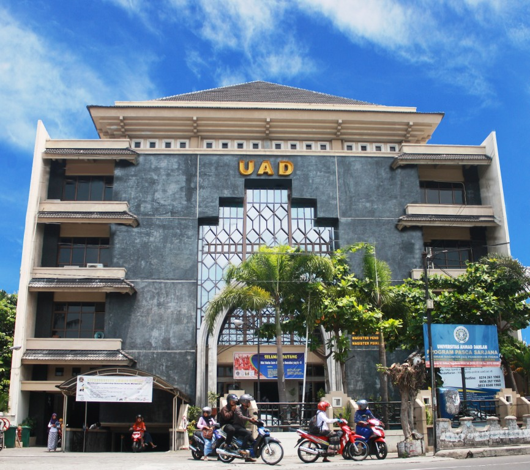

Traveloka Epic Sale 80% Spesial Untuk Pengguna Baru! Dapatkan segera diskonnya hanya berlaku sekarang !

ALL NEW TOYOTA SIENTA! Mobil baru yang di desain ramah lingkungan dan menjadi mobil keluarga yang sangat mewah!
Postingan Teratas
UAD KAMPUS 1
Tentang Kampus 1
Kampus 1 Universitas Ahmad Dahlan berada di Jalan Kapas No. 9 Semaki 55166. Kampus 1 terletak sangat dekat dengan ruang publik Stadion Mandala Krida serta pusat.baca selengkapnya

baca selengkapnya
UAD KAMPUS 2
Tentang Kampus 2
Kampus 2 Universitas Ahmad Dahlan berada di Jalan Pramuka No. 42 Sidikan 55161. Kampus ini terletak tidak jauh dari titik-titik strategis Kotamadya Yogyakarta.baca selengkapnya

UAD KAMPUS 3
Tentang Kampus 3
Kampus 3 Universitas Ahmad Dahlan berada di Jalan Prof. Dr. Soepomo, S.H. Janturan Yogyakarta 55164. Kampus ini pun terletak diantara pusat pemerintahan.baca selengkapnya
UAD KAMPUS 4
Tentang Kampus 4
Kampus 4 Universitas Ahmad Dahlan berada di Jalan Ring Road Selatan, Tamanan, Banguntapan, Bantul Yogyakarta 55166 . Kampus ini terletak sangat dekat dengan Terminal Giwangan.baca selengkapnya
UAD KAMPUS 5
Tentang Kampus 5
Kampus 5 Universitas Ahmad Dahlan berada di Jalan Ki Ageng Pemanahan No. 19 Sorosutan Yogyakarta 55164. Kampus ini pun terletak tepat berhadapan dengan Rumah Tetangga.baca selengkapnya
UAD KAMPUS 6
Tentang Kampus 6
Kampus 6 Universitas Ahmad Dahlan berada di dekat Area Sawah, Wates, Kabupaten Kulon Progo, Daerah Istimewa Yogyakarta 55651.baca selengkapnya